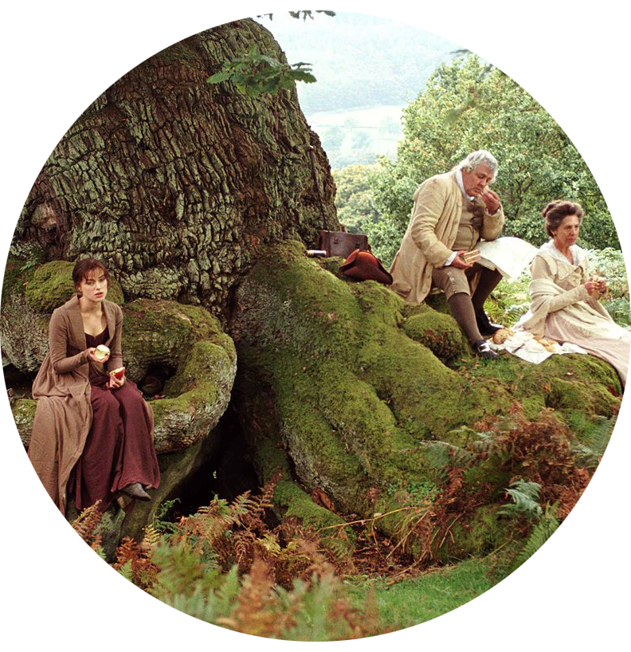

Matthew Macfadyen as Mr. Darcy
這部電影是2005年的英國愛情電影，根據珍·奧斯汀1813年出版的同名小說改編。導演Joe Wright將影片的時代背景提前，希望強調出法國大革命對英國的影響，避免將時代背景定型為「理想的攝政世界」。奧斯汀學者指出，本片以「面向年輕人的電影製作手法」將遺產電影的多種傳統特徵混合，創造出了新的混合型電影類別。
Matthew Macfadyen as Mr. Darcy
Keira Knightley as Elizabeth Bennet
Chatsworth House is a stately home in Derbyshire,England.It has been home to the Cavendish family since 1549.The house is set in expansive parkland and backed by wooded, rocky hills that rise to heather moorland.Chatsworth has been chosen in several surveys as Britain's favourite country house.
Situated north of Hathersage, Stanage Edge is a popular place for walkers and for rock climbing with stunning views of the Dark Peak moorlands and the Hope Valley. The gritstone edge stretches for approximately 4 miles and was recently featured in the classic film ‘Pride & Prejudice’ starring Keira Knightley.
Sherwood Forest is a royal forest in Nottinghamshire, England, famous by its historic association with the legend of Robin Hood.In Pride and Prejudice, there is a 500-year-old tree where Elizabeth and the Gardiners stop for a picnic lunch.
